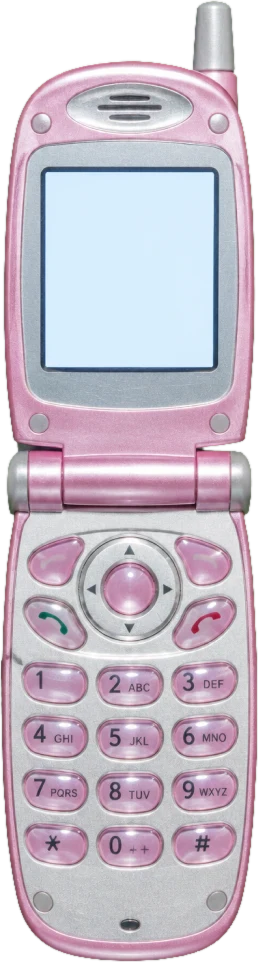
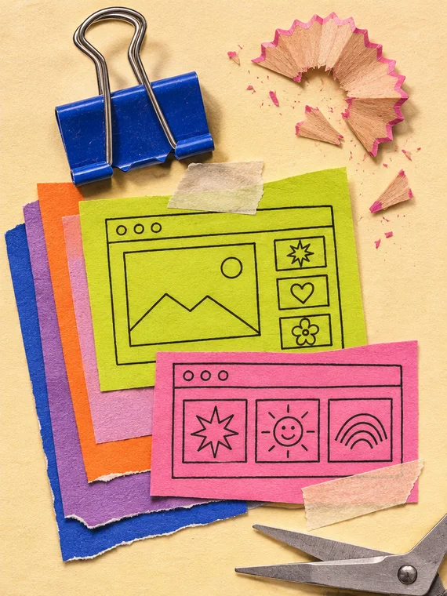
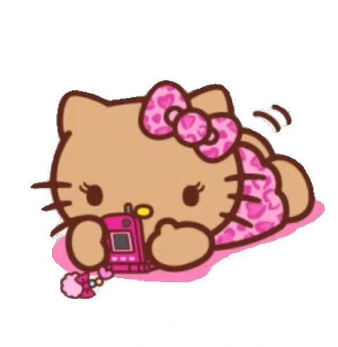

oi, eu sou a sabrina :)
lógica,decisão& glitter.
Sou Product Designer. Gosto daquela parte em que o briefing tem mil abas abertas. Meu trabalho é descobrir o que a pessoa precisa fazer e desenhar um caminho que faça sentido.



mensagem ♥lerabc
gocase.case · o mais recente
selecione um projeto
quatro cases,por dentro.

Conheci a internet nos anos 2000. Uma página abria com música, outra tinha um cursor de estrelinha. Antes mesmo de ler, já dava pra sentir que tinha alguém do outro lado.
Quando fiz meu portfólio, quis que ele também tivesse a minha cara. Por isso tem recorte de papel, foto do meu cachorro e um celular rosa que guardou um recado pra você.

Como eu trabalho
Minha playlist de projeto
Ouvir antes de abrir o Figma
Converso com quem usa o produto e com quem o mantém. Onde a pessoa trava? O que já tentou? As respostas guiam o que vale investigar.
Escolher o que vem primeiro
Cruzo as necessidades das pessoas com as regras do negócio. Com o time, defino qual tarefa precisa ficar mais fácil primeiro.
Dar forma à ideia
Desenho o caminho principal, preparo as telas e monto um protótipo. É aqui que uma conversa sobre “um botão ali” ganha contexto.
Testar e ajustar o volume
Observo alguém tentando concluir a tarefa. Se uma etapa pede explicação demais, volto ao desenho. Depois, acompanho os detalhes com desenvolvimento.



sobre mim
prazer,sabrina.
Moro em São Paulo e há mais de quatro anos desenho produtos digitais. Gosto de acompanhar a ideia inteira, da primeira conversa com quem usa até aquele detalhe que ajusto com desenvolvimento.
Na Toodoo, conduzo workshops com clientes e desenho jornadas para web e mobile. Também trabalho em tempo parcial na Sevn Technologies, onde cuido do design de produtos e da evolução da identidade visual.
Estudei Comunicação e Design na UFPE e hoje curso Web Design na FIAP. O gosto por recortes veio junto nessa mudança de tela.

- product design
- web design
- ux/ui
- discovery
- design system
- white label
contato
boraconversar?
Briefing pronto ou ideia no rascunho? Me conta quem usa o produto e qual parte você quer repensar.
sabrina diz: oi! pode puxar uma cadeira.
sabrina diz: pra falar de projeto, me chama no WhatsApp. ♥
© 2026 Sabrina Pasti · feito em São Paulo, com um pouco de glitter